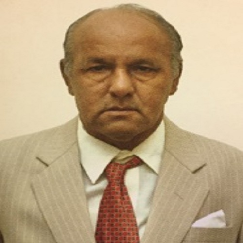
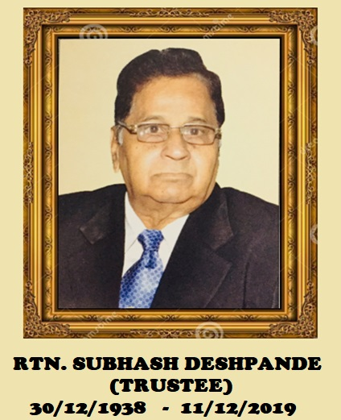

The people guiding Rotary School Uran.
A dedicated board of directors and management team committed to the Society’s mission of accessible, quality education.
A message from Shri. Vikas Mahajan
Rotary Education Society’s Rotary English Medium High School has, over more than three decades, grown from two rooms and forty students into a campus of three buildings teaching Nursery through Std 12 — recognised as one of the best schools in the Uran area.
The school traces back to 25th December 1989, when a survey by Rotary Club members found that Uran, despite already having three English medium schools, needed another as the local population grew with industrialisation. On the Chartered Day of 16th August 1990, land was granted for the school and it opened its doors, later receiving recognition from the Government of Maharashtra.
Alongside academics, the school also invests in sports and other special training for its students, with the President and Managing Committee continuing to work toward its ongoing success.
— Shri. Vikas Mahajan, President, Rotary Club Uran & Rotary Education Society
Rotary Education Society management committee
Shri. Vikas Mahajan
PresidentShri. Jagdish Patil
Vice PresidentShri. Yatin Mhatre
Hon. SecretaryShri. Shekhar Mhatre
Joint SecretaryShri. Prasanna Kumar
TreasurerShri. Dr. B. V. Devnikar
Trustee
Shri. Narendra Padte
Trustee
Rtn. Subhash Deshpande
TrusteeIn loving memory · 30/12/1938 – 11/12/2019Names, roles, and photographs are taken directly from the Society’s official records. A dedicated school Principal profile can be added here as soon as the school provides those details.